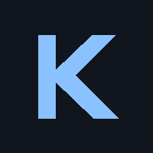

KRYPTO
App-Zugang
Ein Zugang für alle Geräte. Keine Datenbank-Zugangsdaten erforderlich.
Dein Trading-Cockpit
Aktivität
Letzte Entscheidungen
Kandidaten & Entscheidungen
Letzter belegter Entscheidungsstand, keine Aussage über einen gerade laufenden Prüfvorgang. Maximal 30 Kandidaten mit Entscheidungsbeleg.
Einzelne Kandidaten
Paper-Handel
Markt & Quellen
Vorhandene Forschungsbelege, getrennt vom produktiven Handel. Kein zusätzlicher Markt-Scan.
Abruf beim Öffnen dieses Bereichs.
Nachrichten & wichtige Termine
Geprüfte amtliche Nachrichten aus dem bestehenden Quellenmanagement. Keine automatische Richtungsprognose.
Abruf bei sichtbarer Marktansicht.
Redaktionelle Quellen und Prüfstand
Aktuelle Kraken-Kurse
Öffentliche EUR-Marktdaten für BTC, ETH, SOL und bis zu 12 der zuletzt belegten Kandidatenpaare. Nur bei sichtbarer Marktansicht, keine Handelsausführung. Kraken erhält nur die öffentlichen Paarsymbole.
Abruf bei sichtbarer Marktansicht.
Lernen & Strategie
Was wir bereits gelernt haben
V2R3 – Abschlussreview 07.10.2026
1.000 geprüfte Kandidaten, nur ein abgeschlossener Paper-Trade. Daraus ließ sich keine belastbare Handelsrendite ableiten.
Historische abgeschlossene Stichprobe, nicht aktuelle V3-Daten.V2R4 – Lernübergabe 10.12.2026
1.696 Kandidaten, kein Paper-Trade. 956 von 1.096 WAIT-Fällen ohne Modell-Nachprüfung. Auch 127 echte Nachprüfungen ergaben keinen Kauf.
Die damalige Untersuchung fand Daten- und Entscheidungsengpässe; ein einzelner ursächlicher Fehler wurde nicht bewiesen.
Originalberichte werden beim Öffnen gelesen.
Wie geht es mit dem Lernen weiter?
Erst reife Kursverläufe, Kosten, Risiko, verpasste Chancen und tatsächliche Paper-Ergebnisse erlauben die wirtschaftliche Bewertung. Diese App verändert keine Handelsregeln.
Systemzustand
Gezielte Fehlerbehebung
Noch kein bestätigter Cloud-Abruf.
Konkrete technische Fehlerdetails
Automatisch aus dem vorhandenen Hostbericht. Noch keine Auswertung lokaler Detailprotokolle und kein Nachweis der Fehlerursache.
Die App zeigt keine angeblich ausgeführten Reparaturschritte. Maßgeblich bleiben die Originalnachweise und persönlichen Freigaben.
Noch kein Störungsauftrag vorbereitet.
Kein direkter Work-Start, keine Fernsteuerung. Vorhandenen Arbeitschat verwenden; nur falls noch kein zuständiger Auftrag besteht, in Work übergeben.Steuerung
Steuerungsauftrag vorbereiten
Nur Auftragsvorbereitung – keine Fernsteuerung, keine Ausführung.
Noch kein bestätigter Cloud-Abruf.
Noch kein Entwurf erstellt.
Der bestehende Arbeitschat und #99/#353 bleiben zuständig. Ein Entwurf ändert keine Positionen, Tasks, Freigaben oder Handelsregeln.
Warum gibt es noch keine direkten Schalter?
Die bisherige App hat ausschließlich Leserechte. Der frühere STOP betrifft die V2R4-Vorgängerprozesse. PaperResume ist eine lesende Klärung, kein Startbefehl. Eine separate sichere Pause neuer V3-Einstiege bei weiterlaufender Positionsbetreuung ist noch nicht nachgewiesen. Direkte Steuerung benötigt einen passenden bestehenden oder minimal ergänzten freigegebenen Ausführungspfad.